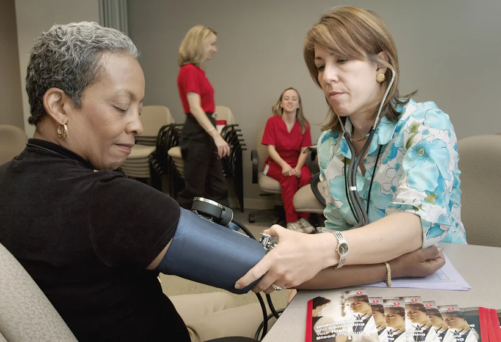
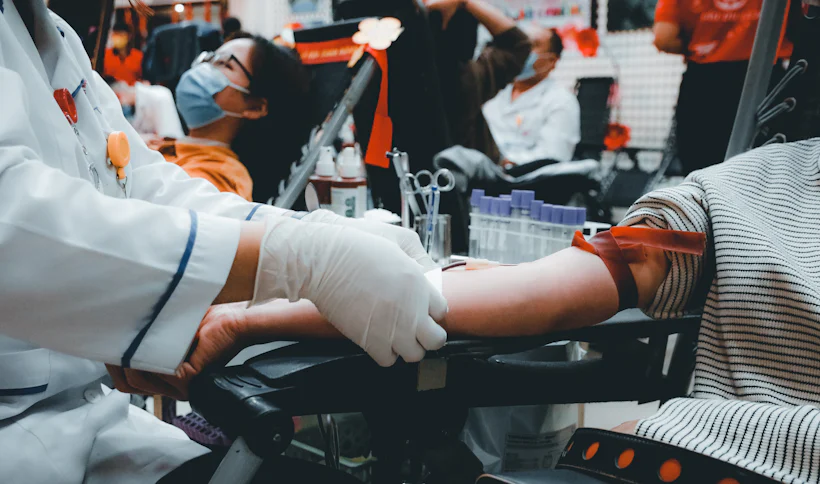
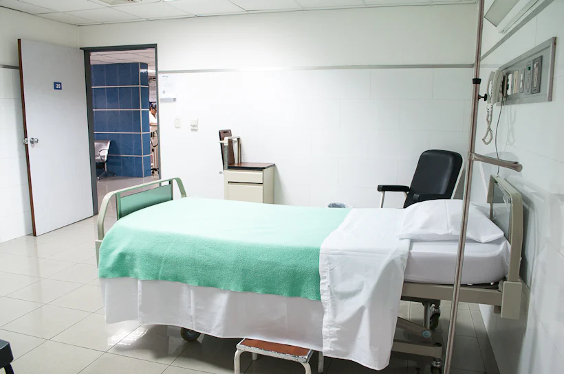

Cardiology
Dr. Alana Yorke
Interventional cardiologist. Runs the chest-pain fast lane — door to balloon in 41 minutes.
The Stackly roster · 240+ specialists
Ten disciplines, one team. Every Stackly doctor is board-certified, empathy-checked and one message away — browse the board and meet the person who'll know your name.

Ten wings, one team
Every name below is real, verified and taking new patients.
Seven wings in rotation — turn the dial to meet the lead of each.
Interventional cardiologist. Runs the chest-pain fast lane — door to balloon in 41 minutes.
Stroke & cognitive rehab. Believes every scan deserves a conversation, not just a report.
Keeps a drawer of stickers and a NICU team that celebrates every gram. Kids ask for her by name.
Sports & joint reconstruction. Gets runners back on the road — and tells them when to rest.
Precision oncology with a human plan. Runs the weekly survivorship circle she founded.
Medical & surgical skin care — from stubborn rashes to early melanoma caught at 3mm.
Reads 40,000 images a year and still calls every patient with an abnormal result himself.
This board doesn't sit behind glass. All three still take shifts, still take calls, and still know their patients by name.
2,300 surgeries and still knocks before entering. He rebuilt our theatres around one rule — the patient wakes to a familiar face.
18 yrs · 98.7% success rateReads data the way others read novels. She built the early-warning engine that flags a deteriorating patient four hours sooner.
11 yrs · 40+ papers publishedKeeps 4,000 people — patients and staff — pulling the same direction. If a ward is short-handed, he is the first to pull a shift.
9 yrs · 120 residents a yearMeasured across the last twelve months of care.
Patients who'd choose Stackly again.

Consults that begin within five minutes.
Issues resolved on the very first consult.
Average wait for a senior specialist.
Video consults, instant prescriptions and follow-ups that don't make you travel. The same doctor, the same record — from your kitchen table.
No queues, no hold music — straight into the room.
Sent to any pharmacy before the call even ends.
End-to-end encrypted rooms, deleted after 30 days.
Pick a day and a doctor — the live slots update instantly.
Times shown in your local zone. Slots refresh every few minutes.
Five rooms, five teams, thousands of quiet wins. Scroll to fan the case files.
Stents, valves and rhythm — the fast lane for frightened hearts.
Millimetre precision, kinder recovery and scars you'll barely find.
From first heartbeat to first breath, with a team that never blinks.

Answers in minutes — read by humans, double-checked by machines.
Strength rebuilt one honest session at a time — with a plan you keep.
Hover a line to peek at the room. No lorem, just last week.
Nurses, porters, chefs, physios — the people who make a hospital a place you'd return to.